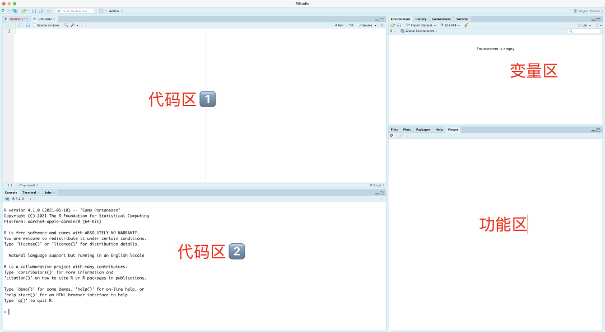
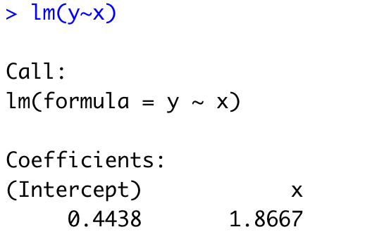
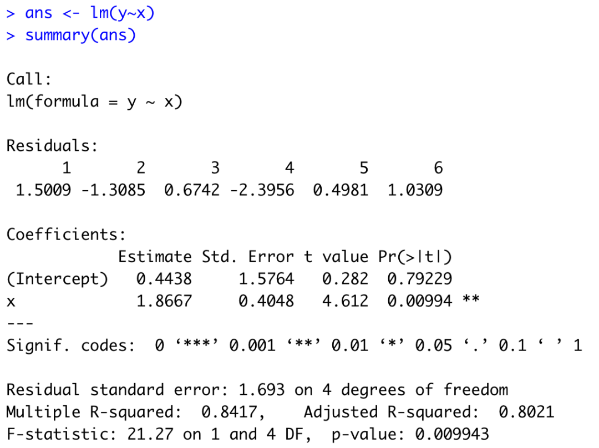

R语言使用指南 第一期
本文转载自 THU长乐未央 公众号，作者：学生科协学术部
3月17日（周四），《基础物理实验1》绪论课。课上讲述了课程基础知识，包括实验数据分析和不确定度评定，相信大家听了课之后还是一头雾水，本次未央书院学生科协学术部给大家带来了R语言的介绍，希望能为大家的数据分析和绘图工作提供一定的帮助。
01 R语言简介
R是一套由数据操作、计算和图形展示功能整合而成的套件。包括：有效的数据存储和处理功能，一套完整的数组（特别是矩阵）计算操作符，拥有完整体系的数据分析工具，为数据分析和显示提供的强大图形功能，一套（源自S语言）完善、简单、有效的编程语言（包括条件、循环、自定义函数、输入输出功能）。
02 安装R
R语言下载地址：https://mirrors.tuna.tsinghua.edu.cn/CRAN/
安装时请注意：R语言的安装路径不能有空格，不能有中文，所以比如“C:\R”或“D:\R”这种路径就比较适合。（macOS用户可以忽略这一句）如果对自己的安装技能非常没有信心，也可以参考https://zhuanlan.zhihu.com/p/163769717中的安装流程。
R安装完成后，需要安装Rstudio，下载地址为：https://www.rstudio.com/ 。这个安装时没什么要注意的，一路安装即可。
安装完Rstudio后打开，如图所示。

{kind=link}
（如果没有左上角的代码区1，通过File->New File->R Script创建一个新文件应该就有了）
左上角的代码区1用于写一些比较长的代码，可以一次性运行多行；左下角的代码区2主要用于写比较简短的代码，主要用于单行运行；右上角的功能基本只会用到“environment”标签页，表明现在环境内变量有哪些，值是多少，因此可以叫它“变量区”；右下角的功能区一般用于展示图表、查询帮助等。
03 误差
本段中误差主要指随机误差。当我们想知道某个量 \(y\) 的值时，我们无法直接得到 \(y\) 的值，我们只能对这个值进行多次测量，得到一些测量值，用这些测量值的平均值用于估计 \(y\) 的大小。
这个估计值和真实值有一定的差异，我们将这个差异叫做随机误差。
根据中心极限定理，我们可以知道 \(y\) 的测量值服从均值为 \(y\)，方差未知的正态分布。（“～”表示服从某种分布）
因此 \(y\) 的均值也服从一个正态分布。
这样，我们可以通过变换得到
根据高中知识，我们可以通过 \(y\) 的测量值得到方差的估计量：
如果用 \(s\) 替代正态分布中的 \(\sigma\) 的话，我们可以得到
这表明左面这个分数服从于自由度为 \(n-1\) 的t分布。（t分布是一个轴对称的分布，在n趋近于无穷大的时候趋近于标准正态分布 \(N(0,1)\)。这个分布会在概率论与数理统计中学习，或者大家可以参见百度百科）
假如我们的置信概率为 \(p\)，这表明
此时我们反解y的区间，就可以得到y的一个置信区间为
因此我们可以得到A类分量（名词来自基物实验绪论课课件）的表达式
04 代码实现
说了这么多，下面我们通过R语言来实际计算一次不确定度吧！
例子：用螺旋测微计测某一钢丝的直径d，6次测量值分别为0.249，0.243，0.247，0.250，0.253，0.250。已知测微计的零位（零点）读数值（已定系差）：0.003, 误差限：ΔINS=0.004。请给出完整的测量结果。（单位：mm）
- 首先求平均值。在左下方代码区2首先将数据输入，输入命令
按回车，就将数据输入进去了。其中，c 是一种命令，可以认为用一个向量 data 将这六个数据存起来了。然后输入命令 mean(data)，表示对 data 这个向量取平均值，就可以得到结果了。具体实现过程如下图所示。
-
再根据已定系差对估计值进行修正，即将得到的平均值减掉零点读数值即可，命令为
mean(data) - 0.003，然后回车。 -
计算标准偏差（standard deviation）。命令为
sd(data)（sd即为标准偏差的英文首字母），然后回车。 -
计算“t因子”。需要注意的是，根据对称性，我们可以得到下面这个式子
在R语言中，对于上面这种定义方式，计算p因子的命令就是 qt((1+p)/2,n-1)。（\((1+p)/2\)就是上面图片中等式右面的值）在本例子中，命令即为 qt(0.975,5)，按回车。
值得注意的是，如果大家想在中间暂存某些数字，可以采用如 a=qt(0.975,5) 这种命令，就代表把t因子的值存给了a，此时右上角的变量区也会显示出现了一个新的变量 a 以及它的值。
-
计算两类分量。我们首先计算A类分量，命令为
UA=qt(0.975,5)/sqrt(6)*sd(data)，回车。我们此时将A类分量的值存给了UA这个变量。再输入命令UB=0.004，我们此时就将B类分量的值存给了UB。 -
计算总不确定度。我们可以采用
sqrt(UA^2+UB^2)这个命令将两类分量采用方和根合成。
除了在左下方的代码区2一行行输入这些命令，我们还可以在左上方一次性将这些命令都输入进去，然后全体选中，再按“ctrl+enter”（macOS相应为“command+enter”），即可一次性得到结果。左下方的代码区会将所有结果一并显示出来。
{kind=link}
这样我们就可以将直径的值写为\((0.246\pm 0.005)\text{mm}\)
05 线性回归
根据高中知识，线性回归中我们可以采用最小二乘法估计斜率和截距。我们下面就介绍如何在R语言中实现线性回归。假如我们有两组数据：
我们将它们输入到R中。然后输入命令 lm(y~x)，其中lm是线性模型（linear model）的首字母，y~x 表示 \(y\) 对 \(x\) 拟合（即拟合模型为 \(y=ax+b\)）。得到的结果如下所示。
{kind=link}
这就表明 \(x\) 前面的系数为 \(1.8667\)，而截距为 \(0.4438\)，这个直线拟合结果为 \(y=1.8667x+0.4438\)。这时候有同学就要问了，我想要更详细的数据怎么办呢？别急，我们先用 ans=lm(y~x) 将这个结果存在 ans 这个变量里，然后用 summary(ans) 这个命令，就可以得到更详细的信息了，如下图所示。
{kind=link}
可以看到，在 Estimate一列我们也可以得到斜率和截距的估计值。除此之外，Std.Error一列实际上就是对应量的A类扩展不确定度，即1.5764和0.4048分别是截距和斜率的A类扩展不确定度。而 \(y\) 的A类扩展不确定度是在Residual standard error后，本例子中为1.693。此时需要注意自由度从之前例子中的 \(n-1\) 变为了\(n-2\)。（其实也可以在Residual standard error一行中得到具体的自由度的大小，比如本例中就是4=6-2）
如果我还想画图怎么办呢？那么我们可以采用下面的命令：plot(x,y)+lines(x,fitted(ans))，即可绘制出带有散点图的直线拟合图，之后通过右下方功能区的export命令输出图片或者采用截图软件进行截图。第一个命令 plot(x,y) 代表绘制横坐标为向量x，纵坐标为向量y的散点图，第二个命令 lines(x,fitted(ans)) 代表绘制横坐标为x，纵坐标为 fitted(ans) 形成的一条直线。（fitted(ans)命令实际上给出了线性回归后在每个x点的拟合值）
{kind=link}
如果想对这个图做更多的调整，如调整横纵坐标名字，横纵坐标尺度，可以通过在左下方代码区2输入 ?plot 命令进行查询，然后再做修改。比如，将横坐标名字设为 abcd 就可以修改命令为 plot(x,y,xlab="abcd")+lines(x,fitted(ans)) 得到。? 可以查询各种各样命令的具体用法，比如 ?plot、?mean 等。
那如果我要拟合截距为0的直线怎么办呢？我们只需要将前面代码中 lm(y~x) 改成 lm(y~x+0) 即可，这表示我们已经固定回归模型中的截距为0了，其他命令都是完全相同的。
Tips：R语言绘图中对中文支持不太好。大家如果要在图中加入中文，可以截图后用“画图”、“Photoshop”、“预览”等软件进行二次修改。此外，大家在使用R语言的时候，注意在代码中也尽量不要出现任何中文，代码中所有的括号、引号均为英文，如果输入成中文符号很有可能报错。
06 总结
虽然我们给大家讲述了R语言的用法，但只看不练是远远不够的。熟悉一门语言最好的方法就是多用，多查，多问。在笔者看来，R语言在数据分析、绘图等方面都是非常强大的，希望R语言能帮助大家更好地完成数据分析和绘图的相关任务。当然，未央书院学生科协未来也会继续为大家带来R语言的后续教程，敬请期待～
文案｜于浩洋
排版｜于浩洋
审核｜于浩洋 钱菱潇 朱培豪 吴承晋